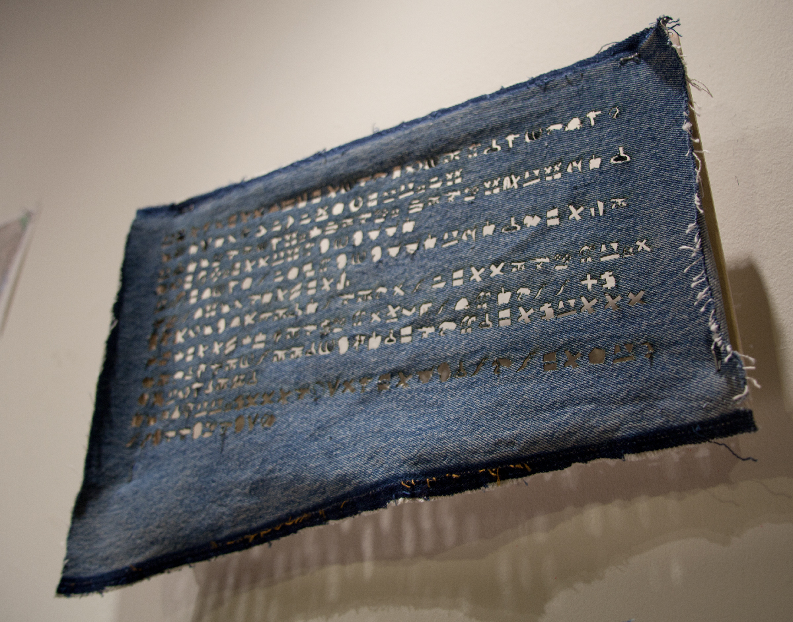
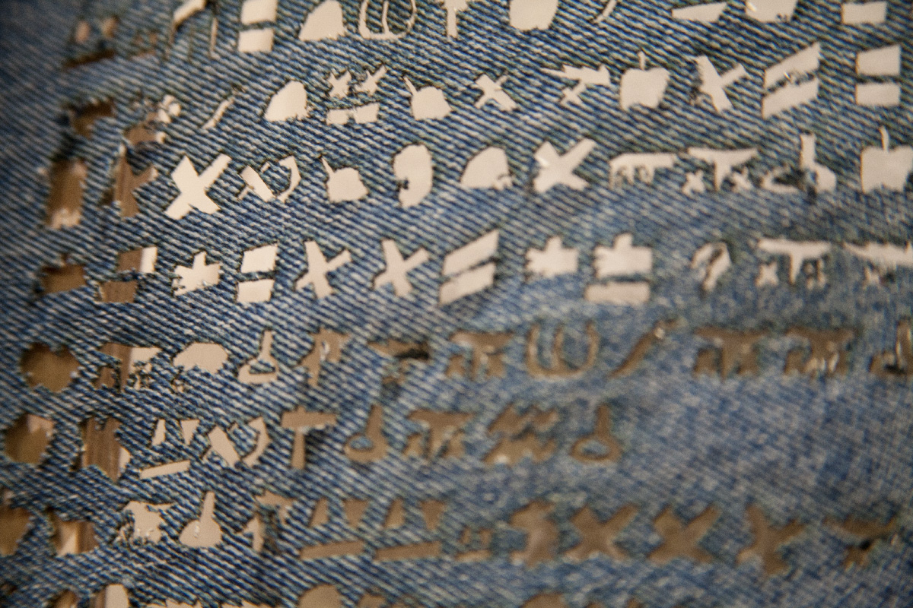
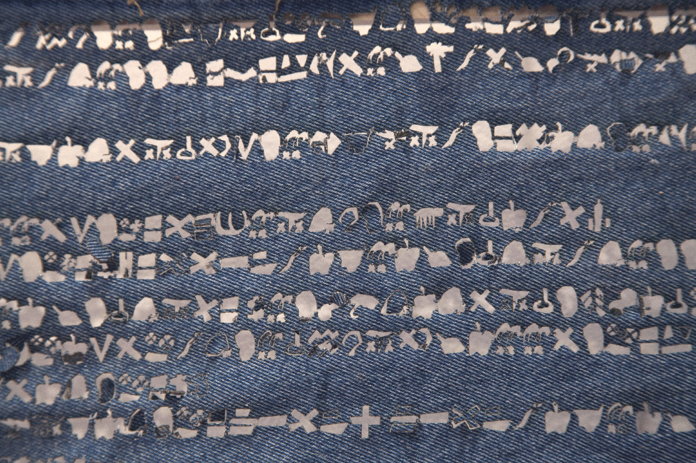

The Biography of Levi Strauss is an experiment in symbol creation and digital fabrication. Using a custom font set developed from iconic interpretations of the text of "The Autobiography of Levi Strauss." I was interested in using an iconic material as a sort of hieroglyphic scroll to tell a story that capture the American dream.
  Exhibited at the ITP Winter Show, New York NY 2012